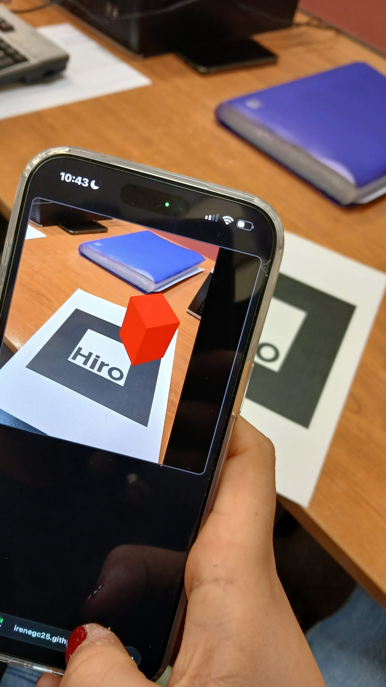
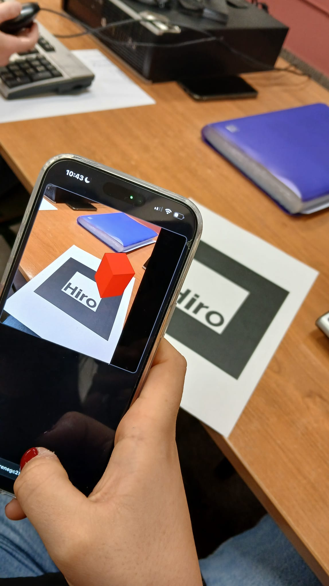
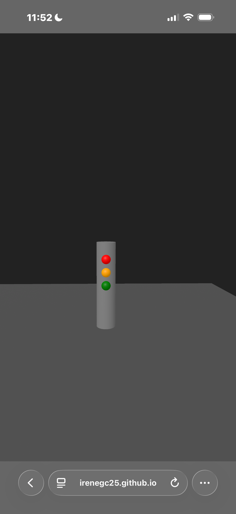
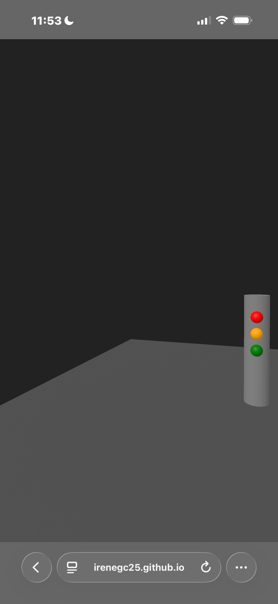
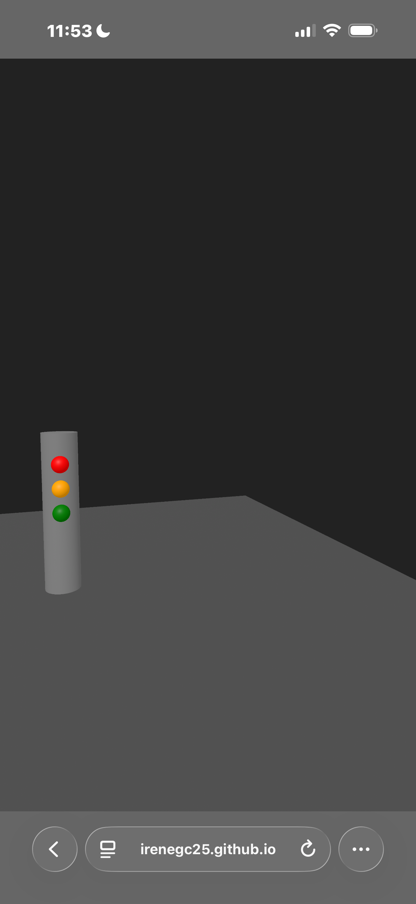

Evidencias del bloque de Realidad Aumentada
En esta página iré incorporando las evidencias de las tareas del bloque de realidad aumentada.
Tarea 1 — Primera escena con marcador
Realice un código creando una web que nos permite acceder a una muestra de realidad virtual a través de la cual aparece un objeto en realidad aumentada sobre el maracador.
Hemos realizado una serie de pruebas que hemos capturado en las fotos adjuntas aqui debajo para comprobar el buen funcionamiento de la web .
Una vez adjuntadas las imágenes en nuestra tarea dentro de la página web nuestro profesor podrá ver el buen funcionamiento conseguido de la realidad aumentada.
Enlace a la experiencia: Abrir tarea 1


Tarea 2 — Semáforo 3D.
A través del código proporcionado por el profesor hemos creado un semáforo en 3D.
Hemos realizado una serie de cambios en dicho código, de manera que hemos jugado con las variables Z e Y .
Como resultado obtenemos un semáforo en 3D al que podemos acceder a través del link que adjunto debajo y que he incluido a mi página web. También adjunto las fotos de las evidencias de mi trabajo que he sacado con el teléfono móvil
 .
.
Enlace a la experiencia: Abrir tarea 2


